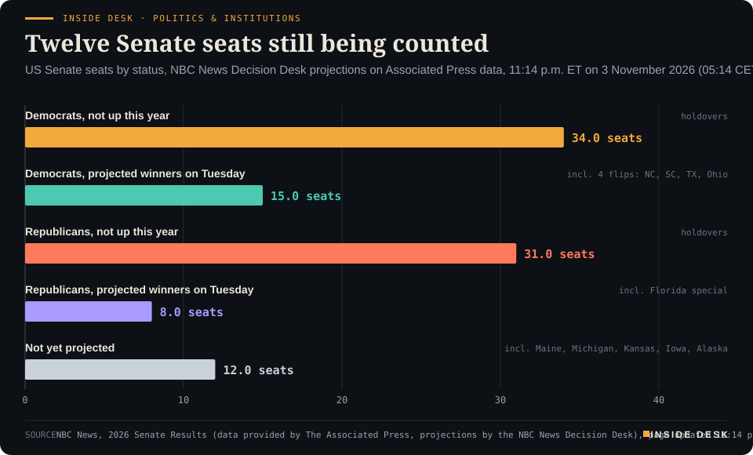
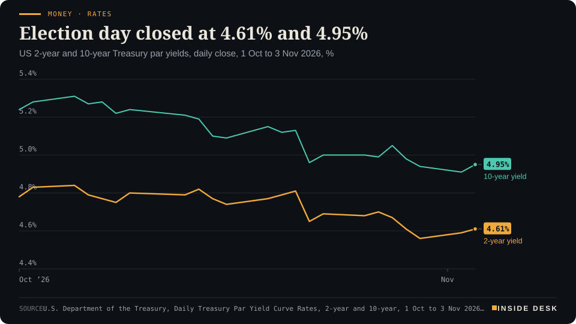
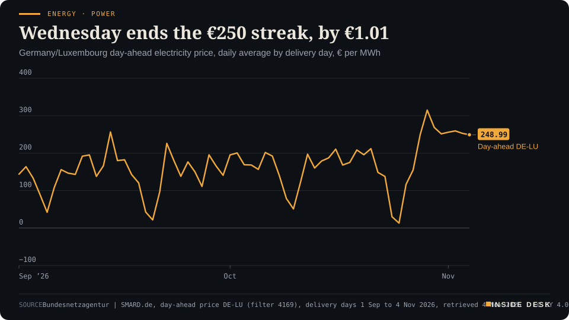

Inside Desk ePaper, Morning ePaper · Wed 4 Nov 2026
Wednesday, 4 November 2026Always free
Inside Desk
Morning ePaperAvailable 06:30 CET · Berlin
Lead · Politics & Institutions
By breakfast in Berlin the networks had called the House for the Democrats. The Senate, a Westchester warehouse and the people who count ballots are still at work, which is how it should be.
By breakfast in Berlin the networks had called the House for the Democrats, while twelve Senate seats and a warehouse of bagged ballots in Westchester were still being counted. Elsewhere, AMD's margin outlook slipped a point, the 10-year Treasury yield slipped to about 4.90% overnight, and German wind nearly doubled without moving the gas plants or the price.
America voted, the television networks have called the House, and the counting goes on in rooms where nobody is in a hurry, which is exactly as it should be.
Geo-economics · p. 5
Markets & Macro · p. 6
Energy & Industry · p. 10
Climate & Weather · p. 16
The day in one sentenceAmerica voted, the television networks have called the House, and the counting goes on in rooms where nobody is in a hurry, which is exactly as it should be.
ContentsInside Desk · Morning ePaper4 November 2026
By breakfast in Berlin the networks had called the House for the Democrats, while twelve Senate seats and a warehouse of bagged ballots in Westchester were still being counted. Elsewhere, AMD's margin outlook slipped a point, the 10-year Treasury yield slipped to about 4.90% overnight, and German wind nearly doubled without moving the gas plants or the price.
11 edition pieces · 11 desks · Available 06:30 CET, 4 November 2026
22 ePaper extras, added , 4 November. They appear only in the ePaper and carry their own time.
The website edition follows at 08:30.
The ePaper rhythm
06:30 Morning ePaper (website edition at 08:30)
17:30 Evening ePaper, updated live until 22:30 with an “Updated” time and a Latest page
Sun 10:00 The Sunday Magazine
Berlin time. Every issue is free.
How to read it
Swipe, use the arrow keys or the page strip. Tap any headline for the reading view. Press / to search, t for contents, +/− to zoom. Download the PDF.
LeadInside Desk · Morning ePaper4 November 2026
Politics & Institutions · Lead · 3 min
By breakfast in Berlin the networks had called the House for the Democrats. The Senate, a Westchester warehouse and the people who count ballots are still at work, which is how it should be.
At 04:08 Berlin time NBC News projected that the Democrats will win the House of Representatives, on an estimate of about 248 seats, “well beyond the 218 needed”1. CBS and ABC made the same call2,6. That is a projection, a statistical judgement made in a television studio. The other kind of call goes race by race. By 04:42 CET the Associated Press tally, as relayed by the Azerbaijani agency APA, stood at 111 House seats for the Democrats and 64 for the Republicans5. That tally is slower, and it is the one that grows into a certificate.
What changed hands is already concrete. In Pennsylvania three Republican incumbents lost: Ryan Mackenzie in the 7th District, Rob Bresnahan in the 8th and Scott Perry in the 10th1,2. Elaine Luria won back Virginia’s 2nd, Manny Rutinel took Colorado’s 8th, and Jamie Ager won North Carolina’s 11th, a seat Trump carried by more than 9 points two years ago1. Rebecca Bennett ousted Tom Kean Jr. in New Jersey’s 7th2. The mid-decade redistricting fight did not decide everything in advance. Democrats held Texas’s redrawn 34th District, two redrawn Florida seats and Alabama’s 2nd2. The House the Democrats are winning takes office on 3 January1.
The Senate is closer. The Republicans went into Tuesday with a 53–47 majority4. By 05:14 CET, NBC’s Decision Desk, working from AP data, had the Democrats at 49 seats and the Republicans at 39, with 12 races not yet projected3. The four Democratic gains are North Carolina (Roy Cooper), South Carolina (Annie Andrews), Texas (James Talarico) and Ohio (Sherrod Brown, 48.6% to 46.5%)3,4. Democrats also held Georgia and New Hampshire4. On NBC’s count the Democrats need two more seats for a majority, and a 50–50 tie would be broken by the vice president3.
The counting is not finished, and the numbers are not settled. In Maine, Susan Collins had 50.3% to Troy Jackson’s 49.6%, with 39% of the vote in. In Michigan, Abdul El-Sayed had 51.0% to Mike Rogers’s 47.2%, with 31.7% in. Kansas was rated lean Democratic, and Alaska had reported nothing yet3. These are partial counts, and this desk does not turn them into results.
LeadInside Desk · Morning ePaper4 November 2026
Inside Desk · Politics & InstitutionsTwelve Senate seats still being countedUS Senate seats by status, NBC News Decision Desk projections on Associated Press data, 11:14 p.m. ET on 3 November 2026 (05:14 CET, 4 November); 100 seats, 51 for a majority

Bar chart of the 100 US Senate seats by status at 05:14 CET on Wednesday 4 November 2026, per NBC News projections on AP data: 34 Democratic seats not up this year and 15 Democratic projected winners on Tuesday (49 in total, including four flips), 31 Republican seats not up and 8 Republican projected winners (39 in total), and 12 races not yet projected. A majority is 51.
Source: NBC News, 2026 Senate Results (data provided by The Associated Press, projections by the NBC News Decision Desk), page updated 11:14 p.m. ET; Democratic and Republican Tuesday winners derived by Inside Desk from totals minus seats not up for election; retrieved 4 Nov 2026, about 05:15 CET. Projections, not certified results. · CSV
The most useful words of the night came from the people who lost. “The voters have spoken,” wrote John Cornyn, who lost his primary to Ken Paxton, as he congratulated Talarico and offered help with his transition4. Thom Tillis said he looked forward to “working with him during the transition” after Cooper won his seat4. In New Hampshire, John Sununu said simply that “it is not our night”4. The president wrote that Republicans would have won “IN A LANDSLIDE” had he been on the ballot6. Results are rarely changed by speeches. …
Geo-economicsInside Desk · Morning ePaper4 November 2026
Geo-economics · 2 min
Washington has given notice that South Africa and Rwanda will leave its African trade preference scheme. The useful response came from the trade ministry, and it reads like an invoice checklist.
On Monday, 2 November, President Trump notified Congress and the governments of South Africa and Rwanda that he intends to remove both countries from the African Growth and Opportunity Act (AGOA) as of 1 January 20271. AGOA is the US preference scheme that gives eligible sub-Saharan African countries generally duty-free access for qualifying goods2. US Trade Representative Jamieson Greer said the annual review had found “concerning and pervasive practices”. For South Africa, the administration listed barriers to US trade and investment, corruption and “threats to U.S. national security and foreign policy interests”1.
The reply that matters most for businesses came a day later, and it was not a speech. South Africa’s Department of Trade, Industry and Competition published an FAQ for exporters2. Its first point is a number. Already 89% of South African exports to the US enter under ordinary WTO most-favoured-nation tariffs, not under AGOA2. Its second is a correction to the rumours: exports are not prohibited, and goods keep entering the US as long as they meet the usual customs and safety rules2.
The notice period also works in both directions. In the ministry’s reading, the government has 60 days to address the issues Washington raised. If it does, South Africa stays in AGOA. If not, it leaves on 1 January2. Desk arithmetic: 60 days from 2 November ends on 1 January.
Then comes the checklist. Confirm the HS code of each product. Check whether it qualifies for AGOA at all. Look up the MFN rate in the US tariff book. Review contracts and Incoterms. Talk to US buyers, because in the US the importer pays the duty2. …
Geo-economics · Short item · ePaper extra, added
Brussels is preparing to rework parts of the single market's rulebook to help firms buy from someone other than China.
The European Commission is preparing targeted changes to the rules of its €18 trillion internal market, meant to help EU firms diversify their sourcing away from countries including China, according to people familiar with the work quoted in Bloomberg reporting summarised by Briefs1. A Commission spokesperson declined to comment1.
What is reportedly on the list is the unglamorous kind of thing that changes trade. It includes motor-vehicle type-approval rules, the foreign-subsidies framework, forced-labour provisions and the trade secrets directive1. The changes are to be bundled into a package due by mid-December. Its centrepiece is a “diversification instrument” that would map where the EU depends heavily on outside suppliers of goods and services and set out ways to reduce that exposure1. …
Geo-economics · Brief · ePaper extra, added
Saudi Arabia ran a deficit of SR84.3 billion ($22.38 billion) in the third quarter, according to the Finance Ministry’s quarterly report1. Revenue was SR259.1 billion and spending SR343.4 billion1. Oil revenue fell 23% from a year earlier to SR116.5 billion, while non-oil revenue rose 20% to SR142.6 billion1. Over the first nine months, financing expenses climbed 38% to SR54.8 billion and subsidies 49% to SR41.7 billion1. The ministry now estimates a full-year deficit of SR165.4 billion, and in September it projected SR191 billion, or 3.6% of GDP, for 20271. Desk arithmetic: in the third quarter non-oil income exceeded oil income by SR26.1 billion. That is diversification, and it shows in the ledger, not the speeches.
Markets & MacroInside Desk · Morning ePaper4 November 2026
Markets & Macro · Podium vs Print · 2 min
AMD's chief executive promised growth and fatter profits for years to come. Her own outlook table, printed the same evening, puts next quarter's gross margin a point lower.
Podium
“we are confident in our ability to sustain very strong revenue growth and expanding profitability over the coming years”
Lisa Su, chair and chief executive of AMD, in the company's third-quarter results release, Tuesday 3 November 2026, after the New York close
Print≈55%
Expected non-GAAP gross margin for the fourth quarter, after 56% in the third.
AMD's own fourth-quarter outlook, in the same release, Tuesday 3 November 2026
The podium. AMD’s third quarter was the biggest in its history: revenue of $13.4 billion, up 45% on a year earlier, above the top of its own guidance1. Lisa Su, its chair and chief executive, said the data centre business had nearly doubled and that growth should “accelerate further” in the fourth quarter. Then came the sentence for the long run: AMD is “confident in our ability to sustain very strong revenue growth and expanding profitability over the coming years”1.
The print. The same release carries an outlook table. Fourth-quarter revenue is expected at about $17 billion, plus or minus 3%, which would be 66% growth on a year earlier1. Non-GAAP gross margin is expected at about 55%1. In the third quarter it was 56%1. CNBC notes that the 55% sits slightly below the 55.3% analysts had pencilled in, according to StreetAccount2. Desk arithmetic: the revenue range runs from about $16.5 billion to $17.5 billion; a one-point lower margin on $17 billion is roughly $170 million of gross profit that the higher revenue has to cover.
The gap. It is a small gap, and both statements can be true. Su spoke of “the coming years”; the table speaks of one quarter. Margins can dip while a new product ramps and rise again later. On the call she said AMD had secured “the wafers, substrates, advanced packaging, memory, and other key components” for much higher growth next year2, and securing scarce parts is rarely cheap. The release does not say why the margin is guided lower, so neither should we.
What the market did. The shares rose about 8% after hours2: investors paid for the $17 billion and forgave the point. By early Wednesday in Berlin, though, the election count had taken over, and Nasdaq-100 futures were down about 2%3. A record quarter does not insulate a share from the night’s news. For you, the habit is the same as ever: read the outlook table before the quote, and the quote before the price. Nothing here is investment advice.
Markets & Macro · Short item · ePaper extra, added
South Korea's chip shares opened on Wall Street's rally and then traded the American election instead.
Wednesday began well in Seoul. The Kospi rose 1.48% in early trade1, helped by Tuesday’s New York session, where the Philadelphia semiconductor index rose 2.64% and AMD 3.65%2. Briefly it traded above 5,8002.
Then the American count arrived. By about 10:45 local time (02:45 CET) the Kospi was down 1.5% at 5,564.34, after a range of 5,546.89 to 5,828.132. Foreign investors sold a net 695 billion won of shares; retail investors and institutions bought2. SK hynix fell 3.65% and Samsung Electronics 1.82%2. Aju Press linked the turn to early results suggesting Democrats could take both chambers of Congress, and to the worry that this might mean tighter oversight of AI data centre building2.
Tokyo, back from Tuesday’s holiday, opened lower and kept going: the Nikkei 225 was down 3% at 61,183.06 in the same report, while Hong Kong’s Hang Seng slipped only 0.3% and Shanghai 0.2%2. The won strengthened 0.6% to 1,338.30 per dollar2.
Desk arithmetic: from the session high of 5,828.13 to 5,564.34 is a fall of about 4.5% inside two hours. Nothing in Korea’s factories changed in those two hours. What changed was a guess about Washington’s next two years, made before the count was finished. For you, that is a reason to read morning moves as opinion, and closing prices as slightly firmer opinion. Nothing here is investment advice.
Markets & MacroInside Desk · Morning ePaper4 November 2026
Markets & Macro · Brief · ePaper extra, added
Shopify’s third-quarter revenue rose 32% to $3.74 billion2, and its adjusted earnings of 49 cents a share beat estimates of 46 cents1. The shares still fell 8.74% on Tuesday1. Revenue was just below the $3.75 billion analysts expected; merchandise volume of $119.15 billion missed $120.03 billion; subscription gross profit came in near $20 million short1.
The company’s president, Harley Finkelstein, called it the 13th straight quarter of volume growth above 20% and said Shopify would “ignore the noise day to day”1. Desk arithmetic: on the rounded figures, the revenue miss was about $10 million, roughly 0.3% of the quarter. A business can grow by a third and still disappoint a price that assumed a little more. Nothing here is investment advice.
Politics & InstitutionsInside Desk · Morning ePaper4 November 2026
Politics & Institutions · Short item · ePaper extra, added
Congress gets the headlines. The statehouses, which run the elections, the Medicaid rolls and the roads, were on the ballot too.
Thirty-six states elected governors on Tuesday2. By 04:42 CET, the Associated Press count, as relayed by the agency APA, gave the Democrats 15 governorships and the Republicans 10, with the rest still to be called2.
The most telling result came from Ohio. Amy Acton, a Democrat and the former director of the Ohio Department of Health, is projected by ABC News to beat Republican Vivek Ramaswamy1. Ohio has chosen a public-health administrator to run the state. California went to Democrat Xavier Becerra, ABC projects1. In Georgia, Senator Jon Ossoff used his own victory speech to congratulate Keisha Lance Bottoms, the Democrat who won the governor’s race3.
Why should you care, sitting in Europe? Because American governors do much of the work that Washington talks about. They run Medicaid enrolment, unemployment offices, the state National Guard when it is not federalised and, not least, the administration of elections. When a county scanner rejects ballots, state and county officials are the ones who sort it out.
In many states, the governor also signs or vetoes the congressional map. That matters in a decade when maps have been redrawn mid-cycle.
Change in Washington comes through votes in Congress. Change in a state comes through budgets, appointments and an agency head who answers the phone. Neither makes as much noise as the night itself.
More than 57 million Americans voted before Tuesday, a midterm record on University of Florida Election Lab figures1. How they voted changed more than how many did. Across the 27 states and Washington, D.C., that reported both methods in each of the last two midterms, mail voting fell 13% while early in-person voting rose 46%1. Texas logged 7.7 million early ballots, 97% of them cast in person1. In North Carolina, about 94,000 mail ballots came back, 40% fewer than in 2022. One analyst pointed to a new rule requiring voters to seal an inner envelope, on pain of spoiling the ballot1. The lesson is a modest one. Small rules about envelopes shape how a country votes.
Psychology & BehaviourInside Desk · Morning ePaper4 November 2026
Psychology & Behaviour · 2 min
A four-country survey finds that feeling shut out goes with endorsing political violence, and that feeling powerless makes the link stronger while distrust of institutions makes it weaker.
The document. “From Grievance to Endorsement: Political Alienation as a Conditional Catalyst, Not a Cause, of Support for Political Violence”, by Tahir Abbas of Aston University, published in Psychology of Violence1. It draws on an EU-funded online survey run between 2021 and 2023 with 5,501 adults: 2,535 in the United Kingdom, 1,963 in the Netherlands, 635 in Denmark and 368 in Norway1. On the morning after a long night of American counting, it is a useful thing to read slowly.
The line. Participants were asked whether they agreed that “Sometimes people need to use violence to achieve their goals.” About 8.5% strongly agreed1. The study split people into two broad groups found in every country. The 59% who reported relatively little exclusion and alienation strongly endorsed violence at a rate of 0.5%. Among the other 41%, about 20% did, and roughly four in five did not1. Desk arithmetic: 59% × 0.5% plus 41% × 20% comes to about 8.5% of the whole sample, which matches the headline figure.
The lines around it. Feeling that your group is excluded, humiliated or treated unfairly went with more endorsement in all four countries1. Political alienation on its own did not, once exclusion was taken into account. It changed the strength of the link instead, in two opposite directions. Among people who felt powerless, with lines like “people like me have no power” or “I have no future”, exclusion and endorsement were much more closely tied. Among people who distrusted institutions, the tie was weaker, though still there1. Abbas calls alienation “a conditional catalyst, not a cause or a brake”1.
The caveats. The design cannot show cause and effect. Endorsement was measured with a single statement about attitudes, not behaviour, and most people who hold such views never act on them1. All answers were self-reported, the pattern was clearest in the Netherlands, and the results may not travel beyond established democracies1.
The constructive reading. Distrust, it seems, tends to lead people to walk away rather than lash out. …
Psychology & Behaviour · Short item · ePaper extra, added
A small Copenhagen study found no overall rise in a marker of brain synapses after one dose, but a difference between settings that its authors call preliminary.
Researchers at Copenhagen University Hospital gave 15 healthy adults a single strong dose of psilocybin and used PET scans to measure SV2A, a protein that serves as an indirect marker of synapses, before the dose and a week after1. The study, in Translational Psychiatry, found no statistically significant overall rise. …
Newborns often blink fewer than five times a minute; adults average around 201. Researchers from Tsukuba and Kyoto filmed 113 children aged three to six while they played a card-sorting game that switches between colour and shape rules1. Children who blinked more sorted more accurately when the rule changed, and the link held after allowing for age, at a modest partial correlation of 0.221. Blink rate also tracked activity in the upper-right prefrontal cortex, measured with a light-based headband1.
The study, in Communications Psychology, measured each child once, so it cannot show cause1. The authors are blunt: there is no evidence that blinking more helps, and the measure “should not be used to evaluate or diagnose individual children”1. A cheap window into development, then, and not a test.
Energy & IndustryInside Desk · Morning ePaper4 November 2026
Energy & Industry · 2 min
SMARD's first full-day figures show 368.8 gigawatt hours from the turbines against 196.6 on Monday. The fossil fleet barely noticed, and neither did the price.
Yesterday the wind did what Monday’s forecasters promised. German onshore turbines generated 279.3 gigawatt hours across the whole of Tuesday 3 November and offshore wind 89.5, SMARD’s provisional figures show1. Desk arithmetic: that is 368.8 gigawatt hours, against 196.6 on Monday (73.7 onshore, 122.9 offshore), an increase of about 88%1. Onshore alone produced almost four times Monday’s output1.
The fossil fleet hardly moved. Natural gas plants produced 310.0 gigawatt hours on Tuesday against 316.3 on Monday, a fall of about 2%1. Lignite gave up a little more, 260.5 against 276.1, about 6%1. Hard coal went the other way, from 102.3 to 107.71. Desk arithmetic: the three together fell from 694.7 to 678.2 gigawatt hours, by 16.5, while wind rose by 172.21.
So where did the wind go? Not into a quieter country: total grid load was 1,421.4 gigawatt hours on Tuesday, barely below Monday’s 1,436.71. SMARD’s residual load, the demand left over after wind and solar, fell from 1,159.8 to 978.3 gigawatt hours1. The generation series do not show where the rest of the difference was settled; the cross-border account is a separate ledger, and this desk has not yet checked it. What the figures do show is that one windy weekday does not switch off the plants that were already booked, warmed up and selling into the evening peak.
Energy & Industry · Short item · ePaper extra, added
Oil slipped in Asian trade while America counted votes. Industry data showed U.S. crude stocks falling by 5.27 million barrels when analysts expected a rise.
Oil spent the American election night drifting rather than jumping. Brent futures fell 26 cents, or 0.25%, to $103.34 a barrel by 02:57 CET, and U.S. WTI crude fell 53 cents to $95.56, Reuters reported via CNBC1. In Tuesday’s session Brent had already eased more than 1% to its lowest level in nearly four weeks, as traders weighed talks to end the wars in Ukraine and Iran1.
The talks are the price. A senior Iranian official told Reuters on Tuesday that Iran and the United States remain far from a deal, while a U.S. official described “defensive” strikes on Iran’s Qeshm island that another official said did not signal a return to major combat1. Qatar has stepped up mediation1. Each sentence moves the barrel a little; none of them settles it.
The inventories are the invoice. The American Petroleum Institute’s figures, cited by market sources, showed U.S. crude stocks falling by 5.27 million barrels in the week to 30 October1. …
Energy & Industry · Brief · ePaper extra, added
The first backup-plant auction now has addresses. RWE says it won contracts for three hydrogen-capable gas plants in North Rhine-Westphalia: about 730 megawatts in Voerde, 700 in Weisweiler and 700 in Werne1. Those are “reduced megawatts”: under the law, only 85% of a gas plant’s installed capacity counts in the auction1. Desk arithmetic: about 2,130 counted megawatts implies roughly 2,500 installed.
RWE says it wants to start building the first plant “in a few weeks” and plans to invest about €9 billion by 2031 in flexible generation, batteries and hydrogen production1. It runs about 4,200 megawatts of gas plants in Germany today1. A press release is a promise; the building site will be the receipt.
Money, FX & CommitteesInside Desk · Morning ePaper4 November 2026
Money, FX & Committees · 2 min
The bond market did what it usually does on a surprising night: it bought Treasuries, sold the dollar, and left the arguing to the strategists.
On Tuesday, election day, the US Treasury’s official closing yields were 4.61% for the two-year note and 4.95% for the ten-year1. That was a touch higher than Monday’s 4.59% and 4.91%, and well below where October began, at 4.78% and 5.24%1. The chart shows the month: a slow drift, one sharp drop on 22 October, and a quiet Tuesday.
Money · RatesElection day closed at 4.61% and 4.95%US 2-year and 10-year Treasury par yields, daily close, 1 Oct to 3 Nov 2026, %

Line chart of the daily US 2-year and 10-year Treasury par yields from 1 October to 3 November 2026. On 1 October the 2-year is at 4.78% and the 10-year at 5.24%. The 10-year peaks at 5.31% on 5 October; both fall sharply on 22 October and drift lower to 4.56% and 4.94% on 30 October. On Tuesday 3 November 2026, US election day and the latest value, the 2-year closes at 4.61% and the 10-year at 4.95%, a gap of 0.34 percentage points.
Source: U.S. Department of the Treasury, Daily Treasury Par Yield Curve Rates, 2-year and 10-year, 1 Oct to 3 Nov 2026 (home.treasury.gov), retrieved 4 Nov 2026 · U.S. government data, public domain · Official closes only; overnight moves after the election are not drawn. · CSV
Then the count started. As CNBC’s election desk projected a Democratic House, with the Senate still undecided, investors sold stock futures and bought bonds. …
Money, FX & Committees · Short item · ePaper extra, added
China's central bank is making banks hold more foreign currency, to slow a yuan that has been rising too fast for its liking.
Most central banks spend their effort stopping a currency from falling. The People’s Bank of China is trying to stop one rising too fast. On Tuesday it said financial institutions must hold 6% of their foreign-currency deposits as reserves from 15 November, up from 4%, to strengthen “the management of foreign exchange liquidity”1. Reuters calculates that this takes about $24 billion out of the system1.
Money, FX & Committees · Brief · ePaper extra, added
Meta set out on Tuesday to raise $20 billion to $25 billion in bonds, two-thirds in dollars and one-third in euros, according to people familiar with the deal cited by CNBC1. It comes days after S&P Global Ratings moved Meta’s outlook to AA- negative from AA- stable, citing “uncertainty” about heavy capital spending and negative free cash flow1.
The invoices are large. Meta expects $135 billion to $145 billion of capital spending this year, posted negative free cash flow of $2.12 billion last quarter, raised $25 billion in bonds in April, and last week announced plans to raise $95 billion in equity1. Desk arithmetic: at the top of the range, this sale plus April’s would be $50 billion of bonds in a year. A rating outlook is the dull line that tells you what lenders will charge for it. Nothing here is investment advice.
Ordinary & Inherited LifeInside Desk · Morning ePaper4 November 2026
Ordinary & Inherited Life · 2 min
The economy ministry's first draft of the 'Kraftstoffhöchstpreisgesetz' is out. It tells you when a cap could apply, and almost nothing about how high it would be.
If you drive, two dates on your calendar now belong together. The tank rebate of roughly 17 cents a litre ends on 31 December, and the coalition agreed in September that a fuel price cap should follow on 1 January 20272. On Monday evening tagesschau reported that the economy ministry’s first draft of that law had reached the ARD’s Berlin studio1. It is a careful document, and it is careful mostly about when the cap should not apply.
The ledger.
- Trigger: petrol and diesel must each rise by more than five percentage points above the average price increase in the other EU states, for three weeks in a row, on European Commission figures1,2.
- Who checks: the fuel market transparency unit at the Bundeskartellamt, every week2.
- What it is called: a crisis instrument “in the most extreme emergency”, set by government ordinance1.
- How long: three months at most, and it can be suspended if supply is at risk1.
- Where: the federal states may set their own, higher or lower, ceilings, even for individual districts, according to the ADAC’s reading of the draft1,2.
- How high: not stated. The formula is left to a later ordinance, and the ministry says the law can promise “neither the level of a possible maximum price nor a guaranteed price cut”2.
Why it is built like this. The ministry’s worry, as it told dpa, is that a cap set too low could make deliveries unprofitable, so that “imports could fail to arrive”1. The model is Belgium and Luxembourg, where a formula has capped pump prices since a 1974 agreement in Belgium’s case; there the ceiling moves with crude and transport costs and stops excessive mark-ups, not high prices2. The ADAC expects a cap to trim daily average prices “at most slightly” and warns against inflated hopes2.
The politics, in one line each. Saarland’s premier Anke Rehlinger (SPD) called the draft “a fuel-price-cap prevention law”, because three weeks is a long time to wait1. The SPD’s economic spokesman in the Bundestag, Sebastian Roloff, says it is not what the coalition agreed1. The draft is only in early coordination inside the government1.
At your tank. Nothing changes this week. …
Ordinary & Inherited Life · Short item · ePaper extra, added
The health ministry has fixed next year's average supplementary contribution at this year's level. Your own fund still sets your rate.
One line on next year’s payslip has stopped climbing, at least on paper. The Federal Health Ministry has set the average supplementary contribution rate in statutory health insurance for 2027 at 2.9%, unchanged from this year1. The figure rests on the October estimate of the official forecasting group, the GKV-Schätzerkreis, which met on 14 October1.
Average is not yours. Each health fund decides its own supplementary rate1. The 2.9% is a benchmark, so the number that matters is the one in your fund’s letter. …
Ordinary & Inherited Life · Brief · ePaper extra, added
The Verbraucherzentrale is warning about an e-mail with the subject line “Ihre Mailservice VerwaltungsCenter” that pretends to come from the Deutsche Rentenversicherung1. It asks you to review and complete your details in the pension portal, citing supposedly new EU rules on storing personal data, and offers a link to do it1.
The tells are the usual ones: no personal greeting, an odd sender address, and a link1. Do not click it, do not reply, and move the message to spam1. If you want to check your pension account, go to the Rentenversicherung’s official website yourself1. A real institution does not need you to hurry.
Tech & ComputeInside Desk · Morning ePaper4 November 2026
Tech & Compute · 2 min
Google handed schools a switch for its AI. The switch has three positions, and the last one turns off Search as well.
On Tuesday morning Google announced that its AI products would be switched off by default for students in schools that use its education software. Until then, its Gemini tools had been on automatically for schools using Google Classroom1. Chris Phillips, who runs Google’s education business, wrote that Gemini, Gemini Notebook, Gemini in Classroom and Google Search “will be entirely off for K-12 student accounts until school administrators explicitly turn them on”1.
The catch was in the last item. Search was on the list. After what NBC News called “significant backlash”, Google clarified later on Tuesday that schools can switch on Search alone, without the other Gemini products1. But Search itself now carries AI features, such as AI-generated summaries, so a school cannot have Google Search without them1. Google said the changes “give schools more choice, not less”, and that AI Mode and AI Overviews will walk students through problems step by step rather than hand over answers1.
Critics were not persuaded. Randi Weingarten of the American Federation of Teachers said Google had “prioritized its business interests over the education of our children”1. Josh Golin of the advocacy group Fairplay said Google was trying “to strong-arm schools into using its AI products”1. Dozens of outlets covered the announcement within hours, Techmeme’s roundup shows2.
Two dull facts matter more than the quotes. First, Google’s reach: most Chromebooks are bought by school districts, and nearly two-thirds of assignments used a Google product, according to a 2023 Schoolytics report cited by NBC1. Second, the evidence: Stanford’s SCALE Initiative says there are no high-quality causal studies into student use of AI1. A product used that widely, with that thin a research base, is exactly the kind of decision schools should make slowly, by procurement rule and parent meeting rather than by default setting.
Tech & Compute · Short item · ePaper extra, added
Wall Street spent election day studying Texas, where the AI build-out meets water bills and a moratorium.
The AI boom is usually described in chips. On election day, analysts described it in Texas permits. Wells Fargo estimates that 27% of US data-centre gigawatts are in Texas alone, CNBC reports1. More than 80% of Texas voters say they worry about data centres’ effect on water supply and electricity prices, according to a University of Houston survey of 2,000 likely voters conducted 10–14 October1.
The state already has a pause. Governor Greg Abbott halted data-centre permitting in September, saying “Texans must come first”1. …
Tech & Compute · Brief · ePaper extra, added
Super Micro, which builds AI servers, reported record quarterly sales of $19.9 billion, against $5.0 billion a year earlier, and net income of $1.59 billion1. It expects $72 billion to $82 billion of sales in the fiscal year to June1.
The cash-flow statement tells the other half. Operations used $434 million of cash in the quarter1. Money owed by customers rose to $9.69 billion from $6.13 billion in June, and inventories to $15.05 billion from $12.90 billion1. Desk arithmetic: those two lines grew by about $5.7 billion in three months, partly offset by $3.05 billion more in customer prepayments1. The figures are preliminary and unaudited, the company says1. Profit is an opinion until the invoices are paid. Nothing here is investment advice.
Health & CareInside Desk · Morning ePaper4 November 2026
Health & Care · 2 min
A draft law seen by the Deutsches Ärzteblatt would spare doctors, hospitals and insurers some €100 million of paperwork a year. Most of it is the dull kind, which is the point.
A health service runs on two things: people who treat you, and paper that proves they did. A draft law from the Federal Health Ministry, seen by the Deutsches Ärzteblatt, goes after the second. It carries the unlovely name Hilfsmittelmodernisierungs- und Bürokratierückbaugesetz, and the ministry puts the saving at about €100 million a year, rising to about €180 million a year from 20301.
The headline change is small and concrete. Insurers would no longer be able to request an efficiency audit of a practice for sums below €300, counted per practice site, per quarter and per insurer1. Doctors’ bodies, among them the KBV and the German Medical Association, have asked for such a threshold for years. The ministry expects about 70% of the audit procedures carried out so far to fall away1. Desk arithmetic: seven in ten fewer procedures means seven in ten fewer letters, replies and files on both sides of the desk.
Psychotherapy for the young gets its own line. Therapists who mainly or only treat children and adolescents would form a separate group in the planning of where practices may open, so places can be steered to where the need is1. Applying for short-term therapy would go from two steps to one, and a digital application and review procedure would be added1.
Hospitals would drop several reports: the detailed staffing data for psychiatric and psychosomatic units, the proof of how extra money for nurses’ pay rises was spent, and the InEK extreme-cost report1. Quality-assurance data would follow a once-only rule, so a provider reports a figure once rather than once per procedure1. Insurers would file reports on bonus programmes every five years instead of every three1.
None of this is law yet, and drafts change on their way through. But the direction is the right one. A threshold, a single form and a report nobody reads anymore struck off: that is how a system gets its staff back, one quarter at a time.
Health & Care · Short item · ePaper extra, added
Most tuberculosis treatment still means months of daily pills. WHO has now told developers what a long-acting injection would have to do to replace them.
Tuberculosis is usually cured with tablets. The trouble is the calendar: most prevention and treatment programmes rely on daily oral medicines taken over several months, and keeping that up is hard for patients and for the clinics that follow them1. On Tuesday the World Health Organization published target regimen profiles for long-acting injectable medicines, a list of what such products would have to achieve1.
For prevention, the target is a complete course in a single injection, given at one visit to a health worker1. For active disease, WHO wants a regimen of no more than four months with three dosing visits or fewer1. …
Health & Care · Brief · ePaper extra, added
Testing for tuberculosis has long depended on sputum, the phlegm coughed up from the lungs. Many people, children among them, cannot produce it. The second edition of WHO’s guidelines on TB diagnosis, published on 3 November, recommends tongue swabs as a new sample type for exactly those people1.
The 167-page document also recommends a new class of near point-of-care tests that let clinics at the edges of a health system diagnose TB, and pooling of sputum samples to test for TB and rifampicin resistance more cheaply where resources are exceptionally tight1. A living website will list the recommended tests and their prequalification status, and operational guidance is due in the coming months1. The cheapest test is the one that reaches the patient.
Security & OrderInside Desk · Morning ePaper4 November 2026
Security & Order · 2 min
The Black Sea war is reaching NATO's coastline. Romania and Bulgaria are answering with forensic patience and patrol aircraft, not slogans.
Between 5 and 28 October, nine merchant vessels were struck or caught up in drone-linked incidents off Bulgaria and Romania, five near Bulgaria and four near Romania, according to a timeline compiled by the Bulgarian agency BGNES2. Several sank, and crew died or are missing2. NATO said in October that it would send maritime patrol aircraft, radars and drones to the area1. The strikes continued anyway. On 28 October the Liberian-flagged container ship Contship Jet, sailing from Haifa to Constanța with 421 containers, was hit by three maritime drones about 17 nautical miles east of Cape Kaliakra and sank. All 18 crew were rescued and taken to Varna2.
The wider numbers are worse. Russia and Ukraine hit 317 merchant and other vessels in the Black Sea and the Sea of Azov between May and October, against 74 in the previous half-year, according to Ambrey Analytics1. In October, Ambrey counted 38 Russian strikes on ships and 5 Ukrainian ones1. Desk arithmetic: 317 is about 4.3 times 74. Trade is paying for it. Ukraine’s grain exports through its ports fell to 0.81 million tonnes in September, from 2.1 million a year earlier1.
Military analysts told Reuters they had little doubt the attacks near Romania and Bulgaria were Russian. Moscow denies targeting Ukraine’s neighbours1. What stands out is how carefully the two NATO governments handle attribution. Bucharest calls the strikes on civilian ships “systematic” but has not attributed individual attacks, citing the need for forensic evidence. Sofia says some attacks appear to benefit Russia but has not blamed it1. That can look timid. In fact it is what makes a later case hold up. Romania’s defence ministry has documented at least six incursion episodes involving nine aerial targets between 14 and 31 October2.
The response is mostly about procurement, not rhetoric. …
Security & Order · Short item · ePaper extra, added
The NCSC's annual review says AI did not create the weaknesses. It is finding the ones we left lying around.
Launching the National Cyber Security Centre’s annual review on Tuesday, its chief executive, Richard Horne, warned of the “real prospect of an unprecedented rise in the number of cyber incidents” in the coming months1. He pinned the risk on the backlog, not on clever new attacks: “vulnerabilities that have been tolerated for far too long can now be discovered and exploited at a scale that was once unimaginable”1.
The evidence is in the patch notes. Major technology providers are now fixing hundreds of vulnerabilities in a single update, and the Linux kernel project alone patched more than a thousand last month, Horne said1. The NCSC judges it “highly likely” that AI-powered malware will be used in a ransomware attack on Britain’s critical infrastructure by 20281. …
Security & Order · Brief · ePaper extra, added
Special police units have arrested a Turkish national in the Reutlingen district. Baden-Württemberg’s criminal police office says he instructed two men to set fire to a Starlink ground station in Poland on the night of 23 September1. He is held on suspicion of preparing a terrorist offence, and eight mobile phones and ammunition were seized1. The two alleged arsonists, arrested in Nürtingen in mid-October, face extradition to Poland1. Polish prime minister Donald Tusk has called the fire an “act of hybrid warfare”2. Warsaw suspects Russian intelligence was behind it1. Starlink is a strategically important part of Ukraine’s defence1. A warrant is a quieter answer than a speech, and a more durable one.
Climate & WeatherInside Desk · Morning ePaper4 November 2026
Climate & Weather · 2 min
Murasu hit Andhra Pradesh days after Arnab. It killed two people and flattened crops on 52,459 hectares; the evacuations, the train cancellations and the shelters did the quiet work.
The Bay of Bengal has sent Andhra Pradesh two cyclones in a week. Severe cyclonic storm Murasu came ashore near Ongole in Prakasam district in the early hours of Tuesday, local time, days after Cyclone Arnab hit the same region and neighbouring Odisha1,2. The India Meteorological Department put the maximum sustained wind at landfall at 110–120 km/h1.
The ledger of damage is specific, and so far small in lives. At least two people died in Bapatla district when buildings collapsed on them, the state disaster management authority’s managing director, Prakhar Jain, told The Hindu1. Standing crops on 52,459 hectares were destroyed, 312 houses were damaged, and more than 200 mobile towers were affected1. Preliminary reports put losses at ₹344 crore, which Jain said was less severe than Arnab’s toll1. More than 35 trains were cancelled, 14 diverted and eight rescheduled1.
The rain fell on parched ground, and then on too much of it. Prakasam and Bapatla received around 200 millimetres between midnight and 06:00 local time1. Later in the day Marripalem in Palnadu district recorded 263.75 millimetres and Ganapavaram 246.7; five stations measured “extremely heavy” rainfall above 204.5 millimetres and 21 more topped 1001. In neighbouring Telangana, where the IMD had issued a red alert, Bhadradri Kothagudem recorded 6.5 centimetres3.
The machinery that does not make headlines. Officials began evacuating on Monday, planning to move about 30,000 people, and 12,230 were still in relief centres on Tuesday evening1,2. In Kothapatnam about 400 fishing families were moved out before the storm hit, one fisherman told PTI2. Hyderabad’s traffic police asked employers to send staff home early or let them work from home3. A storm that hits a coast twice in a week tests whether the second response is faster than the first. On Tuesday’s evidence, the shelters were ready.
Murasu weakened into a cyclonic storm by midday and was forecast to become a deep depression overnight as it moved north-west towards Telangana1. …
Climate & Weather · Short item · ePaper extra, added
Britain's provisional October figures are a lesson in why one wet month does not refill a hot summer. Now high pressure has switched the rain off again.
October in Britain managed to be wetter, warmer and sunnier than average at the same time. Provisional Met Office figures show the UK received 13% more rain than in a typical October, with northern Scotland 31% above its long-term average1. It was also the fifth-sunniest October since records began in 1910, and the mean temperature was 0.9°C above average, the ninth month in a row above the norm1.
Climate & Weather · Brief · ePaper extra, added
The report has a date; you just cannot read it yet. The World Meteorological Organization will brief journalists in Geneva on Friday 6 November on its State of the Climate 2026 update, under embargo until 9 November1. Secretary-General Celeste Saulo and the WMO’s head of climate information, John Kennedy, are listed to present it1. In Antalya, COP31 organisers expect around 50,000 visitors a day in the Blue Zone and have brought in 630 low-emission buses3.
One input is already public. The WMO’s October seasonal update expects the Niño 3.4 sea-surface temperature anomaly to reach about +3.8°C over November to January, peaking around December, with a narrow spread between models2. An embargo is not secrecy. It is a timetable, and timetables are how institutions keep their promises.
Charts and dataInside Desk · Morning ePaper4 November 2026
Charts and data
Energy · PowerWednesday ends the €250 streak, by €1.01Germany/Luxembourg day-ahead electricity price, daily average by delivery day, € per MWh

Line chart of the daily average German-Luxembourg day-ahead electricity price from 1 September to 4 November 2026, in euros per megawatt hour. It falls to €30.12 on Saturday 24 October and €13.12 on Sunday 25 October during the storm, then climbs to €314.85 on Thursday 29 October, the highest daily average of 2026 so far. The six delivery days from 29 October to 3 November all stayed above €250, ending with €252.85 on Tuesday 3 November. The latest value is €248.99 for delivery on Wednesday 4 November.
Source: Bundesnetzagentur | SMARD.de, day-ahead price DE-LU (filter 4169), delivery days 1 Sep to 4 Nov 2026, retrieved 4 Nov 2026 · CC BY 4.0 · CSV
Money · RatesElection day closed at 4.61% and 4.95%US 2-year and 10-year Treasury par yields, daily close, 1 Oct to 3 Nov 2026, %
Line chart of the daily US 2-year and 10-year Treasury par yields from 1 October to 3 November 2026. On 1 October the 2-year is at 4.78% and the 10-year at 5.24%. The 10-year peaks at 5.31% on 5 October; both fall sharply on 22 October and drift lower to 4.56% and 4.94% on 30 October. On Tuesday 3 November 2026, US election day and the latest value, the 2-year closes at 4.61% and the 10-year at 4.95%, a gap of 0.34 percentage points.
Source: U.S. Department of the Treasury, Daily Treasury Par Yield Curve Rates, 2-year and 10-year, 1 Oct to 3 Nov 2026 (home.treasury.gov), retrieved 4 Nov 2026 · U.S. government data, public domain · Official closes only; overnight moves after the election are not drawn. · CSV
Latest values
Series
Value
Date
Chart
Day-ahead DE-LU
248.99
4 Nov 2026
Wednesday ends the €250 streak, by €1.01
2-year yield
4.61%
3 Nov 2026
Election day closed at 4.61% and 4.95%
10-year yield
4.95%
3 Nov 2026
Election day closed at 4.61% and 4.95%
Last data point of each series in the charts above, from the Inside Desk data archive. Sources under each chart.
Back pageInside Desk · Morning ePaper4 November 2026
Before you close the tab
The day in one sentence
America voted, the television networks have called the House, and the counting goes on in rooms where nobody is in a hurry, which is exactly as it should be.
One thing you can do this week
Read the American results once this morning, from one source that is willing to write "too early to call", and then close it. A race nobody has called is not a race anybody has lost; it is ballots still being counted by people paid to be careful. Let the uncalled stay uncalled until lunch.
A habit, not advice.
What went right
Five people who set out on 30 July on what should have been a one-hour boat trip between two atolls in Micronesia were found alive on Sunday off Fanning Island in Kiribati, about 5,400 kilometres away, after roughly three months adrift 12. The three men and two boys were severely dehydrated and malnourished and were put straight on drips; the local nursing officer said they could already "give a smile face" and wanted to eat 1. The US Coast Guard, which had searched 85,700 square kilometres of ocean for ten days after the boat was reported missing, called it "truly amazing and joyful news", while sending condolences for the four who did not come back 2. Chuuk State has begun talks with Kiribati about bringing the survivors home 2. Local people spotted the boat; a small island clinic did the rest.
In euros at home
A litre of Super E10 cost €2.003 on the German average at 05:13 this morning, diesel €2.228, across stations reporting to the federal fuel price register 3. Where you fill up matters more than you might think: E10 averaged €1.932 in Berlin and €2.044 in North Rhine-Westphalia, and among the 15 largest brands it ranged from €1.947 at SB stations to €2.071 at Agip Eni 3. Desk arithmetic: the gap between Berlin and North Rhine-Westphalia is 11.2 cents a litre, about €5.60 on a 50-litre tank; between the cheapest and dearest of those brands it is 12.4 cents, about €6.20. Early-morning averages are snapshots, and prices move through the day.
Desk arithmetic on the cited averages. Prices differ by station, region and hour. Nothing here is advice.
Small words
Race call
When a news agency such as the Associated Press declares a winner before every vote is counted 4. It is not a guess: AP's Decision Team of journalists, data analysts and political scientists waits until the trailing candidate no longer has any path to victory. "Our certainty is our standard," says David Scott, who runs AP's election services 4. Some races take days; in 2000 AP never called Florida at all because it was too close 4. A call is still not the official result, which comes later, with certification.
Commentary for information only. Not investment, legal, tax, medical or political advice. Inside Desk is free and reader-supported. Every number is sourced in the piece it appears in.
This issue has been updated.
All articles in this edition
Politics & Institutions · 3 min read
Projected, not certified: the House turns, and twelve Senate seats keep counting
By breakfast in Berlin the networks had called the House for the Democrats. The Senate, a Westchester warehouse and the people who count ballots are still at work, which is how it should be.
At 04:08 Berlin time NBC News projected that the Democrats will win the House of Representatives, on an estimate of about 248 seats, “well beyond the 218 needed”1. CBS and ABC made the same call2,6. That is a projection, a statistical judgement made in a television studio. The other kind of call goes race by race. By 04:42 CET the Associated Press tally, as relayed by the Azerbaijani agency APA, stood at 111 House seats for the Democrats and 64 for the Republicans5. That tally is slower, and it is the one that grows into a certificate.
What changed hands is already concrete. In Pennsylvania three Republican incumbents lost: Ryan Mackenzie in the 7th District, Rob Bresnahan in the 8th and Scott Perry in the 10th1,2. Elaine Luria won back Virginia’s 2nd, Manny Rutinel took Colorado’s 8th, and Jamie Ager won North Carolina’s 11th, a seat Trump carried by more than 9 points two years ago1. Rebecca Bennett ousted Tom Kean Jr. in New Jersey’s 7th2. The mid-decade redistricting fight did not decide everything in advance. Democrats held Texas’s redrawn 34th District, two redrawn Florida seats and Alabama’s 2nd2. The House the Democrats are winning takes office on 3 January1.
The Senate is closer. The Republicans went into Tuesday with a 53–47 majority4. By 05:14 CET, NBC’s Decision Desk, working from AP data, had the Democrats at 49 seats and the Republicans at 39, with 12 races not yet projected3. The four Democratic gains are North Carolina (Roy Cooper), South Carolina (Annie Andrews), Texas (James Talarico) and Ohio (Sherrod Brown, 48.6% to 46.5%)3,4. Democrats also held Georgia and New Hampshire4. On NBC’s count the Democrats need two more seats for a majority, and a 50–50 tie would be broken by the vice president3.
Inside Desk · Politics & InstitutionsTwelve Senate seats still being countedUS Senate seats by status, NBC News Decision Desk projections on Associated Press data, 11:14 p.m. ET on 3 November 2026 (05:14 CET, 4 November); 100 seats, 51 for a majority
Bar chart of the 100 US Senate seats by status at 05:14 CET on Wednesday 4 November 2026, per NBC News projections on AP data: 34 Democratic seats not up this year and 15 Democratic projected winners on Tuesday (49 in total, including four flips), 31 Republican seats not up and 8 Republican projected winners (39 in total), and 12 races not yet projected. A majority is 51.
Source: NBC News, 2026 Senate Results (data provided by The Associated Press, projections by the NBC News Decision Desk), page updated 11:14 p.m. ET; Democratic and Republican Tuesday winners derived by Inside Desk from totals minus seats not up for election; retrieved 4 Nov 2026, about 05:15 CET. Projections, not certified results. · CSV
The counting is not finished, and the numbers are not settled. In Maine, Susan Collins had 50.3% to Troy Jackson’s 49.6%, with 39% of the vote in. In Michigan, Abdul El-Sayed had 51.0% to Mike Rogers’s 47.2%, with 31.7% in. Kansas was rated lean Democratic, and Alaska had reported nothing yet3. These are partial counts, and this desk does not turn them into results.
The most useful words of the night came from the people who lost. “The voters have spoken,” wrote John Cornyn, who lost his primary to Ken Paxton, as he congratulated Talarico and offered help with his transition4. Thom Tillis said he looked forward to “working with him during the transition” after Cooper won his seat4. In New Hampshire, John Sununu said simply that “it is not our night”4. The president wrote that Republicans would have won “IN A LANDSLIDE” had he been on the ballot6. Results are rarely changed by speeches. Transitions run on the dull work that comes after them.
Then there is the machinery, which is where trust is earned. In Westchester County, New York, which makes up part of the competitive 17th District, scanners rejected ballots all day. The cause was a software update for one municipal contest, made after the machines had been tested; machines elsewhere still ran the old programming7. Voters put their ballots into sealed bags. A judge allowed officials to move them to a secure warehouse under police escort, to be scanned under the eyes of party representatives, and the count is expected to take until at least Wednesday7. The Republican incumbent, Mike Lawler, put it plainly: “There’s no shenanigans going on here”7. In Leavenworth County, Kansas, a clerical error delivered about 100 ballots instead of 1,000 and one polling place stopped voting for about 90 minutes. Three precincts in Chester County, Pennsylvania, opened late and were allowed to stay open 30 minutes longer8. The fixes were small, written down and public. That is the system working.
On turnout, nobody has a final figure yet, and you should be wary of anyone who claims one. Before Tuesday, more than 57 million Americans had voted early, a midterm record according to University of Florida Election Lab figures. Its director, Michael McDonald, cautioned that an early-vote record is not the same as a turnout record9.
The rest is paperwork. States canvass, check and certify over the coming weeks, and only then is anything final. A night like this ends with a projection. The work of a democracy ends with a signature.
Desk comment Networks project, counties count, and only the certificate is final.
Sixty days, 89% already on ordinary tariffs, and a help desk in Pretoria
Washington has given notice that South Africa and Rwanda will leave its African trade preference scheme. The useful response came from the trade ministry, and it reads like an invoice checklist.
On Monday, 2 November, President Trump notified Congress and the governments of South Africa and Rwanda that he intends to remove both countries from the African Growth and Opportunity Act (AGOA) as of 1 January 20271. AGOA is the US preference scheme that gives eligible sub-Saharan African countries generally duty-free access for qualifying goods2. US Trade Representative Jamieson Greer said the annual review had found “concerning and pervasive practices”. For South Africa, the administration listed barriers to US trade and investment, corruption and “threats to U.S. national security and foreign policy interests”1.
The reply that matters most for businesses came a day later, and it was not a speech. South Africa’s Department of Trade, Industry and Competition published an FAQ for exporters2. Its first point is a number. Already 89% of South African exports to the US enter under ordinary WTO most-favoured-nation tariffs, not under AGOA2. Its second is a correction to the rumours: exports are not prohibited, and goods keep entering the US as long as they meet the usual customs and safety rules2.
The notice period also works in both directions. In the ministry’s reading, the government has 60 days to address the issues Washington raised. If it does, South Africa stays in AGOA. If not, it leaves on 1 January2. Desk arithmetic: 60 days from 2 November ends on 1 January.
Then comes the checklist. Confirm the HS code of each product. Check whether it qualifies for AGOA at all. Look up the MFN rate in the US tariff book. Review contracts and Incoterms. Talk to US buyers, because in the US the importer pays the duty2. The ministry lists automotive parts, citrus, wine, macadamia nuts, clothing, chemicals and pharmaceuticals among the sectors that may be exposed, and it adds that “the actual impact will differ significantly” from product to product2. It also tells exporters not to leave the US market2.
If your company buys from South Africa, the useful work this week is ordinary. Find the tariff line, the Incoterm and the clause that says who pays if the duty changes on New Year’s Day.
Desk comment A trade war is fought in speeches and settled in tariff lines.
€360 billion short, and a package due by mid-December
Brussels is preparing to rework parts of the single market's rulebook to help firms buy from someone other than China.
The European Commission is preparing targeted changes to the rules of its €18 trillion internal market, meant to help EU firms diversify their sourcing away from countries including China, according to people familiar with the work quoted in Bloomberg reporting summarised by Briefs1. A Commission spokesperson declined to comment1.
What is reportedly on the list is the unglamorous kind of thing that changes trade. It includes motor-vehicle type-approval rules, the foreign-subsidies framework, forced-labour provisions and the trade secrets directive1. The changes are to be bundled into a package due by mid-December. Its centrepiece is a “diversification instrument” that would map where the EU depends heavily on outside suppliers of goods and services and set out ways to reduce that exposure1. A second tool would let Brussels restrict market access for selected goods and services faster, and across a wider scope, than current instruments allow. A solidarity mechanism would set out options if a third country targets one or more member states1.
The backdrop is a number. The EU’s goods deficit with China was about €360 billion last year, and Eurostat data put it at roughly €361 billion1. Separate safeguards for chemicals, furniture and machinery, which could take the form of quotas or tariffs, could come as early as the first quarter of 20271. Officials are said to be using as a reference a recent arrangement capping Chinese hybrid cars at 350,000 a year1.
None of this is law yet. Trade chief Maroš Šefčovič plans to take stock of talks with Beijing early next year1. For a purchasing manager, the useful document is not the headline. It is the dependency map, once it is published.
Appears only in the ePaper · Commentary for information only. Not advice.
Geo-economics · Brief · ePaper extra, added
Oil revenue down 23%, financing costs up 38%: Riyadh's quarter
Saudi Arabia's budget report is a ledger of what lower oil income does to a petrostate.
Saudi Arabia ran a deficit of SR84.3 billion ($22.38 billion) in the third quarter, according to the Finance Ministry’s quarterly report1. Revenue was SR259.1 billion and spending SR343.4 billion1. Oil revenue fell 23% from a year earlier to SR116.5 billion, while non-oil revenue rose 20% to SR142.6 billion1. Over the first nine months, financing expenses climbed 38% to SR54.8 billion and subsidies 49% to SR41.7 billion1. The ministry now estimates a full-year deficit of SR165.4 billion, and in September it projected SR191 billion, or 3.6% of GDP, for 20271. Desk arithmetic: in the third quarter non-oil income exceeded oil income by SR26.1 billion. That is diversification, and it shows in the ledger, not the speeches.
Appears only in the ePaper · Commentary for information only. Not advice.
Markets & Macro · 2 min read
Podium vs Print: "expanding profitability" and 55%
AMD's chief executive promised growth and fatter profits for years to come. Her own outlook table, printed the same evening, puts next quarter's gross margin a point lower.
Podium
“we are confident in our ability to sustain very strong revenue growth and expanding profitability over the coming years”
Lisa Su, chair and chief executive of AMD, in the company's third-quarter results release, Tuesday 3 November 2026, after the New York close
Print≈55%
Expected non-GAAP gross margin for the fourth quarter, after 56% in the third.
AMD's own fourth-quarter outlook, in the same release, Tuesday 3 November 2026
The podium. AMD’s third quarter was the biggest in its history: revenue of $13.4 billion, up 45% on a year earlier, above the top of its own guidance1. Lisa Su, its chair and chief executive, said the data centre business had nearly doubled and that growth should “accelerate further” in the fourth quarter. Then came the sentence for the long run: AMD is “confident in our ability to sustain very strong revenue growth and expanding profitability over the coming years”1.
The print. The same release carries an outlook table. Fourth-quarter revenue is expected at about $17 billion, plus or minus 3%, which would be 66% growth on a year earlier1. Non-GAAP gross margin is expected at about 55%1. In the third quarter it was 56%1. CNBC notes that the 55% sits slightly below the 55.3% analysts had pencilled in, according to StreetAccount2. Desk arithmetic: the revenue range runs from about $16.5 billion to $17.5 billion; a one-point lower margin on $17 billion is roughly $170 million of gross profit that the higher revenue has to cover.
The gap. It is a small gap, and both statements can be true. Su spoke of “the coming years”; the table speaks of one quarter. Margins can dip while a new product ramps and rise again later. On the call she said AMD had secured “the wafers, substrates, advanced packaging, memory, and other key components” for much higher growth next year2, and securing scarce parts is rarely cheap. The release does not say why the margin is guided lower, so neither should we.
What the market did. The shares rose about 8% after hours2: investors paid for the $17 billion and forgave the point. By early Wednesday in Berlin, though, the election count had taken over, and Nasdaq-100 futures were down about 2%3. A record quarter does not insulate a share from the night’s news. For you, the habit is the same as ever: read the outlook table before the quote, and the quote before the price. Nothing here is investment advice.
Desk comment A chief executive speaks in years. The outlook table speaks in one quarter, and it is the one you can check first.
Markets & Macro · Short item · ePaper extra, added
Up 1.5% at the open, down 1.5% by mid-morning: Seoul reads the count
South Korea's chip shares opened on Wall Street's rally and then traded the American election instead.
Wednesday began well in Seoul. The Kospi rose 1.48% in early trade1, helped by Tuesday’s New York session, where the Philadelphia semiconductor index rose 2.64% and AMD 3.65%2. Briefly it traded above 5,8002.
Then the American count arrived. By about 10:45 local time (02:45 CET) the Kospi was down 1.5% at 5,564.34, after a range of 5,546.89 to 5,828.132. Foreign investors sold a net 695 billion won of shares; retail investors and institutions bought2. SK hynix fell 3.65% and Samsung Electronics 1.82%2. Aju Press linked the turn to early results suggesting Democrats could take both chambers of Congress, and to the worry that this might mean tighter oversight of AI data centre building2.
Tokyo, back from Tuesday’s holiday, opened lower and kept going: the Nikkei 225 was down 3% at 61,183.06 in the same report, while Hong Kong’s Hang Seng slipped only 0.3% and Shanghai 0.2%2. The won strengthened 0.6% to 1,338.30 per dollar2.
Desk arithmetic: from the session high of 5,828.13 to 5,564.34 is a fall of about 4.5% inside two hours. Nothing in Korea’s factories changed in those two hours. What changed was a guess about Washington’s next two years, made before the count was finished. For you, that is a reason to read morning moves as opinion, and closing prices as slightly firmer opinion. Nothing here is investment advice.
Appears only in the ePaper · Commentary for information only. Not advice.
Markets & Macro · Brief · ePaper extra, added
Revenue up 32%, shares down 8.7%: Shopify missed by a rounding error
A one-quarter gap between growth and expectation, measured in the smallest unit Wall Street uses.
Shopify’s third-quarter revenue rose 32% to $3.74 billion2, and its adjusted earnings of 49 cents a share beat estimates of 46 cents1. The shares still fell 8.74% on Tuesday1. Revenue was just below the $3.75 billion analysts expected; merchandise volume of $119.15 billion missed $120.03 billion; subscription gross profit came in near $20 million short1.
The company’s president, Harley Finkelstein, called it the 13th straight quarter of volume growth above 20% and said Shopify would “ignore the noise day to day”1. Desk arithmetic: on the rounded figures, the revenue miss was about $10 million, roughly 0.3% of the quarter. A business can grow by a third and still disappoint a price that assumed a little more. Nothing here is investment advice.
Appears only in the ePaper · Commentary for information only. Not advice.
Politics & Institutions · Short item · ePaper extra, added
A public-health doctor in Columbus, and 15 governors to 10
Congress gets the headlines. The statehouses, which run the elections, the Medicaid rolls and the roads, were on the ballot too.
Thirty-six states elected governors on Tuesday2. By 04:42 CET, the Associated Press count, as relayed by the agency APA, gave the Democrats 15 governorships and the Republicans 10, with the rest still to be called2.
The most telling result came from Ohio. Amy Acton, a Democrat and the former director of the Ohio Department of Health, is projected by ABC News to beat Republican Vivek Ramaswamy1. Ohio has chosen a public-health administrator to run the state. California went to Democrat Xavier Becerra, ABC projects1. In Georgia, Senator Jon Ossoff used his own victory speech to congratulate Keisha Lance Bottoms, the Democrat who won the governor’s race3.
Why should you care, sitting in Europe? Because American governors do much of the work that Washington talks about. They run Medicaid enrolment, unemployment offices, the state National Guard when it is not federalised and, not least, the administration of elections. When a county scanner rejects ballots, state and county officials are the ones who sort it out.
In many states, the governor also signs or vetoes the congressional map. That matters in a decade when maps have been redrawn mid-cycle.
Change in Washington comes through votes in Congress. Change in a state comes through budgets, appointments and an agency head who answers the phone. Neither makes as much noise as the night itself.
Mail down 13%, in person up 46%: how Americans voted early
The record early vote was not a postal one.
More than 57 million Americans voted before Tuesday, a midterm record on University of Florida Election Lab figures1. How they voted changed more than how many did. Across the 27 states and Washington, D.C., that reported both methods in each of the last two midterms, mail voting fell 13% while early in-person voting rose 46%1. Texas logged 7.7 million early ballots, 97% of them cast in person1. In North Carolina, about 94,000 mail ballots came back, 40% fewer than in 2022. One analyst pointed to a new rule requiring voters to seal an inner envelope, on pain of spoiling the ballot1. The lesson is a modest one. Small rules about envelopes shape how a country votes.
Appears only in the ePaper · Commentary for information only. Not advice.
Psychology & Behaviour · 2 min read
The Annex: 5,501 people, one sentence about violence, and why powerlessness matters more than distrust
A four-country survey finds that feeling shut out goes with endorsing political violence, and that feeling powerless makes the link stronger while distrust of institutions makes it weaker.
The document. “From Grievance to Endorsement: Political Alienation as a Conditional Catalyst, Not a Cause, of Support for Political Violence”, by Tahir Abbas of Aston University, published in Psychology of Violence1. It draws on an EU-funded online survey run between 2021 and 2023 with 5,501 adults: 2,535 in the United Kingdom, 1,963 in the Netherlands, 635 in Denmark and 368 in Norway1. On the morning after a long night of American counting, it is a useful thing to read slowly.
The line. Participants were asked whether they agreed that “Sometimes people need to use violence to achieve their goals.” About 8.5% strongly agreed1. The study split people into two broad groups found in every country. The 59% who reported relatively little exclusion and alienation strongly endorsed violence at a rate of 0.5%. Among the other 41%, about 20% did, and roughly four in five did not1. Desk arithmetic: 59% × 0.5% plus 41% × 20% comes to about 8.5% of the whole sample, which matches the headline figure.
The lines around it. Feeling that your group is excluded, humiliated or treated unfairly went with more endorsement in all four countries1. Political alienation on its own did not, once exclusion was taken into account. It changed the strength of the link instead, in two opposite directions. Among people who felt powerless, with lines like “people like me have no power” or “I have no future”, exclusion and endorsement were much more closely tied. Among people who distrusted institutions, the tie was weaker, though still there1. Abbas calls alienation “a conditional catalyst, not a cause or a brake”1.
The caveats. The design cannot show cause and effect. Endorsement was measured with a single statement about attitudes, not behaviour, and most people who hold such views never act on them1. All answers were self-reported, the pattern was clearest in the Netherlands, and the results may not travel beyond established democracies1.
The constructive reading. Distrust, it seems, tends to lead people to walk away rather than lash out. Powerlessness is the more dangerous feeling, and the author suggests that work on people’s sense that they can change outcomes may do more than campaigns for trust alone1. He also warns that security measures which make whole communities feel stigmatised could deepen the exclusion at the root1. A ballot that gets counted, slowly and in public, is one of the oldest answers to powerlessness we have.
Desk comment A vote you can see counted is the cheapest answer to the feeling that nothing you do matters.
Psychology & Behaviour · Short item · ePaper extra, added
A calm room and a playlist, or an MRI scanner: where psilocybin was taken seemed to matter
A small Copenhagen study found no overall rise in a marker of brain synapses after one dose, but a difference between settings that its authors call preliminary.
Researchers at Copenhagen University Hospital gave 15 healthy adults a single strong dose of psilocybin and used PET scans to measure SV2A, a protein that serves as an indirect marker of synapses, before the dose and a week after1. The study, in Translational Psychiatry, found no statistically significant overall rise. Average changes were around 2% to 3%, and the trial stopped early after an interim analysis showed it was unlikely to reach its target1.
The more interesting part is exploratory. The first five participants took the drug lying in an MRI scanner; the other ten took it in a dedicated room with a curated playlist, with two facilitators present in both settings1. The room group reported more intense mystical-type experiences and more positive lasting effects at three months, with no difference in negative effects1. Their SV2A rose by about 5% to 6% in the frontal cortex and hippocampus, while the scanner group showed no increase; the gap between groups was significant only in the frontal cortex1.
The authors themselves call the setting differences “preliminary and hypothesis-generating rather than conclusive”1. There was no placebo, the groups were not randomised, the scanner group had five people, and some authors have ties to companies developing psychedelic drugs1. Still, the old clinical intuition gets a small data point: the room is part of the treatment.
Babies hardly blink; by six some children blink 20 times a minute
In 113 Japanese preschoolers, those who blinked more did a little better at switching rules. The researchers say not to use it on your own child.
Newborns often blink fewer than five times a minute; adults average around 201. Researchers from Tsukuba and Kyoto filmed 113 children aged three to six while they played a card-sorting game that switches between colour and shape rules1. Children who blinked more sorted more accurately when the rule changed, and the link held after allowing for age, at a modest partial correlation of 0.221. Blink rate also tracked activity in the upper-right prefrontal cortex, measured with a light-based headband1.
The study, in Communications Psychology, measured each child once, so it cannot show cause1. The authors are blunt: there is no evidence that blinking more helps, and the measure “should not be used to evaluate or diagnose individual children”1. A cheap window into development, then, and not a test.
Appears only in the ePaper · Commentary for information only. Not advice.
Energy & Industry · 2 min read
Wind nearly doubled on Tuesday, and the gas plants burned 2% less
SMARD's first full-day figures show 368.8 gigawatt hours from the turbines against 196.6 on Monday. The fossil fleet barely noticed, and neither did the price.
Yesterday the wind did what Monday’s forecasters promised. German onshore turbines generated 279.3 gigawatt hours across the whole of Tuesday 3 November and offshore wind 89.5, SMARD’s provisional figures show1. Desk arithmetic: that is 368.8 gigawatt hours, against 196.6 on Monday (73.7 onshore, 122.9 offshore), an increase of about 88%1. Onshore alone produced almost four times Monday’s output1.
The fossil fleet hardly moved. Natural gas plants produced 310.0 gigawatt hours on Tuesday against 316.3 on Monday, a fall of about 2%1. Lignite gave up a little more, 260.5 against 276.1, about 6%1. Hard coal went the other way, from 102.3 to 107.71. Desk arithmetic: the three together fell from 694.7 to 678.2 gigawatt hours, by 16.5, while wind rose by 172.21.
So where did the wind go? Not into a quieter country: total grid load was 1,421.4 gigawatt hours on Tuesday, barely below Monday’s 1,436.71. SMARD’s residual load, the demand left over after wind and solar, fell from 1,159.8 to 978.3 gigawatt hours1. The generation series do not show where the rest of the difference was settled; the cross-border account is a separate ledger, and this desk has not yet checked it. What the figures do show is that one windy weekday does not switch off the plants that were already booked, warmed up and selling into the evening peak.
Energy · PowerWednesday ends the €250 streak, by €1.01Germany/Luxembourg day-ahead electricity price, daily average by delivery day, € per MWh
Line chart of the daily average German-Luxembourg day-ahead electricity price from 1 September to 4 November 2026, in euros per megawatt hour. It falls to €30.12 on Saturday 24 October and €13.12 on Sunday 25 October during the storm, then climbs to €314.85 on Thursday 29 October, the highest daily average of 2026 so far. The six delivery days from 29 October to 3 November all stayed above €250, ending with €252.85 on Tuesday 3 November. The latest value is €248.99 for delivery on Wednesday 4 November.
Source: Bundesnetzagentur | SMARD.de, day-ahead price DE-LU (filter 4169), delivery days 1 Sep to 4 Nov 2026, retrieved 4 Nov 2026 · CC BY 4.0 · CSV
The price said the same thing, a day in advance. Tuesday’s day-ahead average was €252.85 per megawatt hour and Wednesday’s is €248.99, the first delivery day below €250 since 28 October1. Desk arithmetic: the windiest day since 27 October was priced only €6.46 below Monday’s €259.311. The auction had already read the forecast. It priced the wind as a help, not a rescue.
None of this argues against turbines. It argues for patience with the figures: the first full-day generation numbers are provisional, they move, and a single day tells you about a single day1. Nothing here is investment advice.
Desk comment A turbine can change the weather report. It takes longer to change the merit order.
Energy & Industry · Short item · ePaper extra, added
Brent at $103.34, near a four-week low, and a crude draw nobody expected
Oil slipped in Asian trade while America counted votes. Industry data showed U.S. crude stocks falling by 5.27 million barrels when analysts expected a rise.
Oil spent the American election night drifting rather than jumping. Brent futures fell 26 cents, or 0.25%, to $103.34 a barrel by 02:57 CET, and U.S. WTI crude fell 53 cents to $95.56, Reuters reported via CNBC1. In Tuesday’s session Brent had already eased more than 1% to its lowest level in nearly four weeks, as traders weighed talks to end the wars in Ukraine and Iran1.
The talks are the price. A senior Iranian official told Reuters on Tuesday that Iran and the United States remain far from a deal, while a U.S. official described “defensive” strikes on Iran’s Qeshm island that another official said did not signal a return to major combat1. Qatar has stepped up mediation1. Each sentence moves the barrel a little; none of them settles it.
The inventories are the invoice. The American Petroleum Institute’s figures, cited by market sources, showed U.S. crude stocks falling by 5.27 million barrels in the week to 30 October1. Eight analysts polled by Reuters had expected a rise of about 880,000 barrels1. Gasoline stocks rose by 1.43 million barrels and distillates, which include diesel and heating oil, fell by 1.19 million1. “Diesel inventories remain tight,” Haitong Futures wrote1.
That last line is the one that reaches you at the pump and the heating-oil tank. The official U.S. Energy Information Administration figures are due at 16:30 CET today and can confirm or overturn the industry count1. Nothing here is investment advice.
Appears only in the ePaper · Commentary for information only. Not advice.
Energy & Industry · Brief · ePaper extra, added
Voerde, Weisweiler, Werne: where RWE's backup megawatts will stand
RWE won about 2,100 'reduced megawatts' in Tuesday's auction. The rules count only 85% of a gas plant, so the turbines will be bigger than the headline.
The first backup-plant auction now has addresses. RWE says it won contracts for three hydrogen-capable gas plants in North Rhine-Westphalia: about 730 megawatts in Voerde, 700 in Weisweiler and 700 in Werne1. Those are “reduced megawatts”: under the law, only 85% of a gas plant’s installed capacity counts in the auction1. Desk arithmetic: about 2,130 counted megawatts implies roughly 2,500 installed.
RWE says it wants to start building the first plant “in a few weeks” and plans to invest about €9 billion by 2031 in flexible generation, batteries and hydrogen production1. It runs about 4,200 megawatts of gas plants in Germany today1. A press release is a promise; the building site will be the receipt.
Appears only in the ePaper · Commentary for information only. Not advice.
Money, FX & Committees · 2 min read
4.95% at Tuesday's close, about 4.90% by Berlin's breakfast
The bond market did what it usually does on a surprising night: it bought Treasuries, sold the dollar, and left the arguing to the strategists.
On Tuesday, election day, the US Treasury’s official closing yields were 4.61% for the two-year note and 4.95% for the ten-year1. That was a touch higher than Monday’s 4.59% and 4.91%, and well below where October began, at 4.78% and 5.24%1. The chart shows the month: a slow drift, one sharp drop on 22 October, and a quiet Tuesday.
Money · RatesElection day closed at 4.61% and 4.95%US 2-year and 10-year Treasury par yields, daily close, 1 Oct to 3 Nov 2026, %
Line chart of the daily US 2-year and 10-year Treasury par yields from 1 October to 3 November 2026. On 1 October the 2-year is at 4.78% and the 10-year at 5.24%. The 10-year peaks at 5.31% on 5 October; both fall sharply on 22 October and drift lower to 4.56% and 4.94% on 30 October. On Tuesday 3 November 2026, US election day and the latest value, the 2-year closes at 4.61% and the 10-year at 4.95%, a gap of 0.34 percentage points.
Source: U.S. Department of the Treasury, Daily Treasury Par Yield Curve Rates, 2-year and 10-year, 1 Oct to 3 Nov 2026 (home.treasury.gov), retrieved 4 Nov 2026 · U.S. government data, public domain · Official closes only; overnight moves after the election are not drawn. · CSV
Then the count started. As CNBC’s election desk projected a Democratic House, with the Senate still undecided, investors sold stock futures and bought bonds. By about 04:20 CET the ten-year yield had fallen nearly 5 basis points to 4.902% and the two-year 6 basis points to 4.55%, CNBC reported2. Yields fall when prices rise. Those are overnight quotes, not closes, which is why the chart stops at Tuesday.
The dollar went the other way. The euro firmed 0.5% to $1.1249, the yen 0.7% to 157.63 per dollar, and the dollar index fell 0.3% to 101.4, Reuters reported3. Against the Swiss franc the dollar lost 0.9%3. Carol Kong of Commonwealth Bank of Australia said a Democratic sweep “would limit government spending over Trump’s term”3. Others were less sure the election was the point at all. “I don’t think the big risk to markets is from the blue wave; it’s investors overreacting to a blue wave,” said Michael Arone of State Street4. Tai Hui of J.P. Morgan Asset Management asked how much of the move was politics and how much the AI story of recent weeks, and leaned to the latter4.
Desk arithmetic: the gap between the ten-year and two-year closed Tuesday at 0.34 percentage points, against 0.46 on 1 October1. Overnight, on CNBC’s quotes, it was about 0.352. In plain terms, the night moved the level of borrowing costs, not their shape. For you, holding euros, a dollar that is 0.5% cheaper makes American goods and holidays slightly cheaper, and dollar savings slightly smaller in euros. Neither is a reason to act before a close. Nothing here is investment advice.
Desk comment Elections are decided by voters; the price of the uncertainty is set in the bond market, quietly, before anyone concedes.
Money, FX & Committees · Short item · ePaper extra, added
4% to 6% on 15 November: Beijing leans on its own currency
China's central bank is making banks hold more foreign currency, to slow a yuan that has been rising too fast for its liking.
Most central banks spend their effort stopping a currency from falling. The People’s Bank of China is trying to stop one rising too fast. On Tuesday it said financial institutions must hold 6% of their foreign-currency deposits as reserves from 15 November, up from 4%, to strengthen “the management of foreign exchange liquidity”1. Reuters calculates that this takes about $24 billion out of the system1.
The reason is in the ledger of trade. The yuan has gained more than 5% against the dollar this year, Reuters reports, to its strongest since 2022, carried by robust exports, big trade surpluses and companies converting their dollar earnings1. The onshore yuan had risen for 13 days in a row, the longest run since 1996, before the announcement ended it, according to Bloomberg as cited by CNBC TV182. On the day it weakened as much as 0.37%, to 6.6728 per dollar1; by early Wednesday the offshore rate was 6.67823.
Not everyone expects the step to bite. ANZ’s Zhaopeng Xing said it would “carry greater symbolic significance”, because the excess supply of dollars from exporters is larger than the ratio can absorb1. It also reverses the bank’s September 2023 cut, made when the problem was a falling yuan1.
For you, the dull lesson is that a currency is a queue of invoices. When exporters bring home more dollars than anyone wants, the price moves, and a central bank can slow it but rarely stop it. Nothing here is investment advice.
Appears only in the ePaper · Commentary for information only. Not advice.
Money, FX & Committees · Brief · ePaper extra, added
Up to $25 billion in bonds, a third in euros, days after a negative outlook
Meta goes to the debt market for the AI build, and for the first time asks European investors too.
Meta set out on Tuesday to raise $20 billion to $25 billion in bonds, two-thirds in dollars and one-third in euros, according to people familiar with the deal cited by CNBC1. It comes days after S&P Global Ratings moved Meta’s outlook to AA- negative from AA- stable, citing “uncertainty” about heavy capital spending and negative free cash flow1.
The invoices are large. Meta expects $135 billion to $145 billion of capital spending this year, posted negative free cash flow of $2.12 billion last quarter, raised $25 billion in bonds in April, and last week announced plans to raise $95 billion in equity1. Desk arithmetic: at the top of the range, this sale plus April’s would be $50 billion of bonds in a year. A rating outlook is the dull line that tells you what lenders will charge for it. Nothing here is investment advice.
Appears only in the ePaper · Commentary for information only. Not advice.
Ordinary & Inherited Life · 2 min read
Ordinary Ledger: a fuel price cap with three tripwires, no formula and no promised cent
The economy ministry's first draft of the 'Kraftstoffhöchstpreisgesetz' is out. It tells you when a cap could apply, and almost nothing about how high it would be.
If you drive, two dates on your calendar now belong together. The tank rebate of roughly 17 cents a litre ends on 31 December, and the coalition agreed in September that a fuel price cap should follow on 1 January 20272. On Monday evening tagesschau reported that the economy ministry’s first draft of that law had reached the ARD’s Berlin studio1. It is a careful document, and it is careful mostly about when the cap should not apply.
The ledger.
- Trigger: petrol and diesel must each rise by more than five percentage points above the average price increase in the other EU states, for three weeks in a row, on European Commission figures1,2.
- Who checks: the fuel market transparency unit at the Bundeskartellamt, every week2.
- What it is called: a crisis instrument “in the most extreme emergency”, set by government ordinance1.
- How long: three months at most, and it can be suspended if supply is at risk1.
- Where: the federal states may set their own, higher or lower, ceilings, even for individual districts, according to the ADAC’s reading of the draft1,2.
- How high: not stated. The formula is left to a later ordinance, and the ministry says the law can promise “neither the level of a possible maximum price nor a guaranteed price cut”2.
Why it is built like this. The ministry’s worry, as it told dpa, is that a cap set too low could make deliveries unprofitable, so that “imports could fail to arrive”1. The model is Belgium and Luxembourg, where a formula has capped pump prices since a 1974 agreement in Belgium’s case; there the ceiling moves with crude and transport costs and stops excessive mark-ups, not high prices2. The ADAC expects a cap to trim daily average prices “at most slightly” and warns against inflated hopes2.
The politics, in one line each. Saarland’s premier Anke Rehlinger (SPD) called the draft “a fuel-price-cap prevention law”, because three weeks is a long time to wait1. The SPD’s economic spokesman in the Bundestag, Sebastian Roloff, says it is not what the coalition agreed1. The draft is only in early coordination inside the government1.
At your tank. Nothing changes this week. Budget for January as if the rebate simply ends, because that is the one date already fixed2; treat any cap as a possible brake on spikes, not a discount. Until 31 December the cheapest move remains the dull one: under the rule that lets stations raise prices only once a day at 12:00, the ADAC advises filling up shortly before noon3. Nothing here is investment advice.
Desk comment A cap you cannot calculate is a sentence, not a price.
Ordinary & Inherited Life · Short item · ePaper extra, added
2.9% again: the health insurance add-on holds for 2027, and the minister calls it a first step
The health ministry has fixed next year's average supplementary contribution at this year's level. Your own fund still sets your rate.
One line on next year’s payslip has stopped climbing, at least on paper. The Federal Health Ministry has set the average supplementary contribution rate in statutory health insurance for 2027 at 2.9%, unchanged from this year1. The figure rests on the October estimate of the official forecasting group, the GKV-Schätzerkreis, which met on 14 October1.
Average is not yours. Each health fund decides its own supplementary rate1. The 2.9% is a benchmark, so the number that matters is the one in your fund’s letter. Desk arithmetic: on a gross monthly salary of €3,500, 2.9% comes to €101.50, which employer and employee normally share.
Why it held. The ministry credits a law to stabilise contributions, which it says will relieve the funds by up to €19 billion next year1. Spending is expected to rise by less than 3% in 2027, after almost 7% this year; for the first time in three years, the ministry says, rising income would cover rising spending1.
The minister’s own caveat. “That can only be a first step,” said Health Minister Carsten Linnemann; a finance commission is due to propose structural reforms by the end of 20261. That is the right order: a held rate first, then the harder question of what the system costs. You do not need to do anything today. When your fund writes to you about 2027, compare its rate with 2.9%. Nothing here is financial advice.
Appears only in the ePaper · Commentary for information only. Not advice.
Ordinary & Inherited Life · Brief · ePaper extra, added
'Ihre Mailservice VerwaltungsCenter': the pension fund did not send that
Consumer advisers warn of a fake e-mail in the name of the Deutsche Rentenversicherung that asks you to 'check' your details.
The Verbraucherzentrale is warning about an e-mail with the subject line “Ihre Mailservice VerwaltungsCenter” that pretends to come from the Deutsche Rentenversicherung1. It asks you to review and complete your details in the pension portal, citing supposedly new EU rules on storing personal data, and offers a link to do it1.
The tells are the usual ones: no personal greeting, an odd sender address, and a link1. Do not click it, do not reply, and move the message to spam1. If you want to check your pension account, go to the Rentenversicherung’s official website yourself1. A real institution does not need you to hurry.
Appears only in the ePaper · Commentary for information only. Not advice.
Tech & Compute · 2 min read
Search off by default, and no Search without the AI in it
Google handed schools a switch for its AI. The switch has three positions, and the last one turns off Search as well.
On Tuesday morning Google announced that its AI products would be switched off by default for students in schools that use its education software. Until then, its Gemini tools had been on automatically for schools using Google Classroom1. Chris Phillips, who runs Google’s education business, wrote that Gemini, Gemini Notebook, Gemini in Classroom and Google Search “will be entirely off for K-12 student accounts until school administrators explicitly turn them on”1.
The catch was in the last item. Search was on the list. After what NBC News called “significant backlash”, Google clarified later on Tuesday that schools can switch on Search alone, without the other Gemini products1. But Search itself now carries AI features, such as AI-generated summaries, so a school cannot have Google Search without them1. Google said the changes “give schools more choice, not less”, and that AI Mode and AI Overviews will walk students through problems step by step rather than hand over answers1.
Critics were not persuaded. Randi Weingarten of the American Federation of Teachers said Google had “prioritized its business interests over the education of our children”1. Josh Golin of the advocacy group Fairplay said Google was trying “to strong-arm schools into using its AI products”1. Dozens of outlets covered the announcement within hours, Techmeme’s roundup shows2.
Two dull facts matter more than the quotes. First, Google’s reach: most Chromebooks are bought by school districts, and nearly two-thirds of assignments used a Google product, according to a 2023 Schoolytics report cited by NBC1. Second, the evidence: Stanford’s SCALE Initiative says there are no high-quality causal studies into student use of AI1. A product used that widely, with that thin a research base, is exactly the kind of decision schools should make slowly, by procurement rule and parent meeting rather than by default setting.
The constructive part is that schools now have a switch, and someone in each district must decide where to put it. That is the institution doing its job. For you, if you have a child at school, the useful question for the next parents’ evening is simple: which of the three positions did our school choose, and why?
Desk comment A school buys a tool to serve a lesson plan. When the tool starts setting the terms, the procurement office becomes the most important classroom.
27% of America's data-centre gigawatts, and a governor's race that decides the permits
Wall Street spent election day studying Texas, where the AI build-out meets water bills and a moratorium.
The AI boom is usually described in chips. On election day, analysts described it in Texas permits. Wells Fargo estimates that 27% of US data-centre gigawatts are in Texas alone, CNBC reports1. More than 80% of Texas voters say they worry about data centres’ effect on water supply and electricity prices, according to a University of Houston survey of 2,000 likely voters conducted 10–14 October1.
The state already has a pause. Governor Greg Abbott halted data-centre permitting in September, saying “Texans must come first”1. He sought a fourth term against the Democrat Gina Hinojosa. Evercore ISI, citing its colleague Sarah Bianchi, wrote that Abbott is likely to lift the moratorium, while Hinojosa is expected to keep it1. In the Senate race, the Democrat James Talarico has proposed ending some tax subsidies and tightening standards on labour, the environment and grid use, according to The Texas Tribune as cited by CNBC1.
Not every analyst reads a Democratic advance as bad for the industry. Rob Rains of Washington Analysis expects a Democratic Congress to push harder to “fence off” Chinese competitors1. TD Cowen’s Paul Gallant expects President Trump to veto any AI safety law that creates “material risk to the AI trade”1.
The useful point survives whatever the count shows by the time you read this. Data centres are no longer only a technology story. They are a water story, a grid story and a ballot story, decided by permits, tariffs and voters, which is how big infrastructure has always been built.
Appears only in the ePaper · Commentary for information only. Not advice.
Tech & Compute · Brief · ePaper extra, added
$19.9 billion of sales, and $434 million of cash out of the door
Super Micro's record quarter shows how an AI server boom looks in the dullest statement: the cash flow.
Super Micro, which builds AI servers, reported record quarterly sales of $19.9 billion, against $5.0 billion a year earlier, and net income of $1.59 billion1. It expects $72 billion to $82 billion of sales in the fiscal year to June1.
The cash-flow statement tells the other half. Operations used $434 million of cash in the quarter1. Money owed by customers rose to $9.69 billion from $6.13 billion in June, and inventories to $15.05 billion from $12.90 billion1. Desk arithmetic: those two lines grew by about $5.7 billion in three months, partly offset by $3.05 billion more in customer prepayments1. The figures are preliminary and unaudited, the company says1. Profit is an opinion until the invoices are paid. Nothing here is investment advice.
Appears only in the ePaper · Commentary for information only. Not advice.
Health & Care · 2 min read
€300 before anyone audits the surgery, and seven in ten checks would go
A draft law seen by the Deutsches Ärzteblatt would spare doctors, hospitals and insurers some €100 million of paperwork a year. Most of it is the dull kind, which is the point.
A health service runs on two things: people who treat you, and paper that proves they did. A draft law from the Federal Health Ministry, seen by the Deutsches Ärzteblatt, goes after the second. It carries the unlovely name Hilfsmittelmodernisierungs- und Bürokratierückbaugesetz, and the ministry puts the saving at about €100 million a year, rising to about €180 million a year from 20301.
The headline change is small and concrete. Insurers would no longer be able to request an efficiency audit of a practice for sums below €300, counted per practice site, per quarter and per insurer1. Doctors’ bodies, among them the KBV and the German Medical Association, have asked for such a threshold for years. The ministry expects about 70% of the audit procedures carried out so far to fall away1. Desk arithmetic: seven in ten fewer procedures means seven in ten fewer letters, replies and files on both sides of the desk.
Psychotherapy for the young gets its own line. Therapists who mainly or only treat children and adolescents would form a separate group in the planning of where practices may open, so places can be steered to where the need is1. Applying for short-term therapy would go from two steps to one, and a digital application and review procedure would be added1.
Hospitals would drop several reports: the detailed staffing data for psychiatric and psychosomatic units, the proof of how extra money for nurses’ pay rises was spent, and the InEK extreme-cost report1. Quality-assurance data would follow a once-only rule, so a provider reports a figure once rather than once per procedure1. Insurers would file reports on bonus programmes every five years instead of every three1.
None of this is law yet, and drafts change on their way through. But the direction is the right one. A threshold, a single form and a report nobody reads anymore struck off: that is how a system gets its staff back, one quarter at a time.
Desk comment Every form someone stops filling in is an hour handed back to a patient.
One injection, one visit: WHO writes the specification for TB medicines nobody has yet
Most tuberculosis treatment still means months of daily pills. WHO has now told developers what a long-acting injection would have to do to replace them.
Tuberculosis is usually cured with tablets. The trouble is the calendar: most prevention and treatment programmes rely on daily oral medicines taken over several months, and keeping that up is hard for patients and for the clinics that follow them1. On Tuesday the World Health Organization published target regimen profiles for long-acting injectable medicines, a list of what such products would have to achieve1.
For prevention, the target is a complete course in a single injection, given at one visit to a health worker1. For active disease, WHO wants a regimen of no more than four months with three dosing visits or fewer1. Both profiles ask for small injection volumes, products that need no cold chain, injections that trained staff can give at the lowest feasible level of the health system, and safety and efficacy comparable to today’s pills1.
“Long-acting injectables could make TB prevention and treatment much simpler for the people who need them,” said Tereza Kasaeva, who leads WHO’s HIV, TB, hepatitis and STI department1. The profiles were drawn up with regulators, national TB programmes, people who have had TB and civil society groups, after a public consultation in April and May1. Several candidates are entering or approaching clinical development1.
WHO also says work on better oral regimens should continue, so that patients keep a choice1. A specification is not a medicine. It is the drawing that comes before the factory, and the people who will pay for the factory now know what to build.
Appears only in the ePaper · Commentary for information only. Not advice.
Health & Care · Brief · ePaper extra, added
A tongue swab for people who cannot cough up a sample
WHO's new tuberculosis diagnosis guidelines add tests that work closer to the patient, and a way to test several samples at once.
Testing for tuberculosis has long depended on sputum, the phlegm coughed up from the lungs. Many people, children among them, cannot produce it. The second edition of WHO’s guidelines on TB diagnosis, published on 3 November, recommends tongue swabs as a new sample type for exactly those people1.
The 167-page document also recommends a new class of near point-of-care tests that let clinics at the edges of a health system diagnose TB, and pooling of sputum samples to test for TB and rifampicin resistance more cheaply where resources are exceptionally tight1. A living website will list the recommended tests and their prequalification status, and operational guidance is due in the coming months1. The cheapest test is the one that reaches the patient.
Appears only in the ePaper · Commentary for information only. Not advice.
Security & Order · 2 min read
Nine ships in 24 days, 317 in six months, and a $40 billion counter-drone bill
The Black Sea war is reaching NATO's coastline. Romania and Bulgaria are answering with forensic patience and patrol aircraft, not slogans.
Between 5 and 28 October, nine merchant vessels were struck or caught up in drone-linked incidents off Bulgaria and Romania, five near Bulgaria and four near Romania, according to a timeline compiled by the Bulgarian agency BGNES2. Several sank, and crew died or are missing2. NATO said in October that it would send maritime patrol aircraft, radars and drones to the area1. The strikes continued anyway. On 28 October the Liberian-flagged container ship Contship Jet, sailing from Haifa to Constanța with 421 containers, was hit by three maritime drones about 17 nautical miles east of Cape Kaliakra and sank. All 18 crew were rescued and taken to Varna2.
The wider numbers are worse. Russia and Ukraine hit 317 merchant and other vessels in the Black Sea and the Sea of Azov between May and October, against 74 in the previous half-year, according to Ambrey Analytics1. In October, Ambrey counted 38 Russian strikes on ships and 5 Ukrainian ones1. Desk arithmetic: 317 is about 4.3 times 74. Trade is paying for it. Ukraine’s grain exports through its ports fell to 0.81 million tonnes in September, from 2.1 million a year earlier1.
Military analysts told Reuters they had little doubt the attacks near Romania and Bulgaria were Russian. Moscow denies targeting Ukraine’s neighbours1. What stands out is how carefully the two NATO governments handle attribution. Bucharest calls the strikes on civilian ships “systematic” but has not attributed individual attacks, citing the need for forensic evidence. Sofia says some attacks appear to benefit Russia but has not blamed it1. That can look timid. In fact it is what makes a later case hold up. Romania’s defence ministry has documented at least six incursion episodes involving nine aerial targets between 14 and 31 October2.
The response is mostly about procurement, not rhetoric. A NATO official said the alliance had already committed to invest more than $40 billion in counter-drone capabilities over the next five years1. A senior Romanian official pointed to an urgent need for surface-to-air interceptors and radars1. Turkey, which controls the straits, is waiting for Moscow and Kyiv to respond to its proposal for a narrow maritime ceasefire1.
If you ship through Constanța, or insure cargo that does, the useful information is in the incident log: coordinates, distance from shore, cargo manifests. Leave the communiqués aside. Read the log.
Desk comment Deterrence at sea starts with knowing exactly who hit what, and where.
Security & Order · Short item · ePaper extra, added
"Tech on the cheap": Britain's cyber chief sends the bill for old servers
The NCSC's annual review says AI did not create the weaknesses. It is finding the ones we left lying around.
Launching the National Cyber Security Centre’s annual review on Tuesday, its chief executive, Richard Horne, warned of the “real prospect of an unprecedented rise in the number of cyber incidents” in the coming months1. He pinned the risk on the backlog, not on clever new attacks: “vulnerabilities that have been tolerated for far too long can now be discovered and exploited at a scale that was once unimaginable”1.
The evidence is in the patch notes. Major technology providers are now fixing hundreds of vulnerabilities in a single update, and the Linux kernel project alone patched more than a thousand last month, Horne said1. The NCSC judges it “highly likely” that AI-powered malware will be used in a ransomware attack on Britain’s critical infrastructure by 20281. Even state-linked hacks, it says, often succeed through internet-facing applications where patches were available but were not deployed in time1.
Horne’s sharpest line was aimed at the boardroom. “For decades, we have collectively got away with doing tech on the cheap,” he said, pointing to end-of-life systems kept running for “cost efficiency”1. The defence is mostly budget lines. A £70 million NERV Centre will use AI to look for vulnerabilities across critical infrastructure. A further £60 million goes to the first phase of Cyber Shield, a national network of AI defence agents1. The NCSC still believes the “structural advantage will remain with defenders”, because they own the environment, but it says that advantage “is not a given”1.
The one thing to do this week is unglamorous: list what you run that no longer gets updates, and give it a retirement date.
Appears only in the ePaper · Commentary for information only. Not advice.
Security & Order · Brief · ePaper extra, added
Eight phones, some ammunition, and a third arrest over a Starlink fire
Hybrid sabotage is being met the slow way, with warrants and extradition files.
Special police units have arrested a Turkish national in the Reutlingen district. Baden-Württemberg’s criminal police office says he instructed two men to set fire to a Starlink ground station in Poland on the night of 23 September1. He is held on suspicion of preparing a terrorist offence, and eight mobile phones and ammunition were seized1. The two alleged arsonists, arrested in Nürtingen in mid-October, face extradition to Poland1. Polish prime minister Donald Tusk has called the fire an “act of hybrid warfare”2. Warsaw suspects Russian intelligence was behind it1. Starlink is a strategically important part of Ukraine’s defence1. A warrant is a quieter answer than a speech, and a more durable one.
Appears only in the ePaper · Commentary for information only. Not advice.
Climate & Weather · 2 min read
Two cyclones in a week on the same coast, and 12,230 people in shelters rather than in the water
Murasu hit Andhra Pradesh days after Arnab. It killed two people and flattened crops on 52,459 hectares; the evacuations, the train cancellations and the shelters did the quiet work.
The Bay of Bengal has sent Andhra Pradesh two cyclones in a week. Severe cyclonic storm Murasu came ashore near Ongole in Prakasam district in the early hours of Tuesday, local time, days after Cyclone Arnab hit the same region and neighbouring Odisha1,2. The India Meteorological Department put the maximum sustained wind at landfall at 110–120 km/h1.
The ledger of damage is specific, and so far small in lives. At least two people died in Bapatla district when buildings collapsed on them, the state disaster management authority’s managing director, Prakhar Jain, told The Hindu1. Standing crops on 52,459 hectares were destroyed, 312 houses were damaged, and more than 200 mobile towers were affected1. Preliminary reports put losses at ₹344 crore, which Jain said was less severe than Arnab’s toll1. More than 35 trains were cancelled, 14 diverted and eight rescheduled1.
The rain fell on parched ground, and then on too much of it. Prakasam and Bapatla received around 200 millimetres between midnight and 06:00 local time1. Later in the day Marripalem in Palnadu district recorded 263.75 millimetres and Ganapavaram 246.7; five stations measured “extremely heavy” rainfall above 204.5 millimetres and 21 more topped 1001. In neighbouring Telangana, where the IMD had issued a red alert, Bhadradri Kothagudem recorded 6.5 centimetres3.
The machinery that does not make headlines. Officials began evacuating on Monday, planning to move about 30,000 people, and 12,230 were still in relief centres on Tuesday evening1,2. In Kothapatnam about 400 fishing families were moved out before the storm hit, one fisherman told PTI2. Hyderabad’s traffic police asked employers to send staff home early or let them work from home3. A storm that hits a coast twice in a week tests whether the second response is faster than the first. On Tuesday’s evidence, the shelters were ready.
Murasu weakened into a cyclonic storm by midday and was forecast to become a deep depression overnight as it moved north-west towards Telangana1. If you have family or business in the region, the useful sources this week are the IMD’s district warnings and the state disaster authority, not the rumours that travel faster than either.
Desk comment A storm is measured in millimetres. A state is measured in how many people it moved before the first one fell.
Climate & Weather · Short item · ePaper extra, added
Fifth-sunniest October, 13% more rain, and a drought that is still there
Britain's provisional October figures are a lesson in why one wet month does not refill a hot summer. Now high pressure has switched the rain off again.
October in Britain managed to be wetter, warmer and sunnier than average at the same time. Provisional Met Office figures show the UK received 13% more rain than in a typical October, with northern Scotland 31% above its long-term average1. It was also the fifth-sunniest October since records began in 1910, and the mean temperature was 0.9°C above average, the ninth month in a row above the norm1.
The rain came in a rush. Most of it fell in the last third of the month, when Storms Austen and Boelo swept through; 24 October was provisionally the UK’s joint-sixth wettest day on record1. England had its wettest week in two years, the Environment Agency said, but warned that it was not enough to ease the drought left by the hottest summer on record1. Sustained above-average rain will be needed through the winter1.
Then the tap closed. High pressure has taken control and the jet stream has moved north, so the first days of November are largely dry, with frost and fog at night in the north and west and a brisk easterly in the south1. The BBC’s forecasters see a weak low drifting up from France at the weekend and, beyond next week, a likely return of Atlantic systems, with “a lot of uncertainty” and no definite storm in sight1.
The lesson is the reservoir manager’s, not the headline writer’s: a drought is a balance sheet, and one good month is a deposit, not a repayment.
Appears only in the ePaper · Commentary for information only. Not advice.
Climate & Weather · Brief · ePaper extra, added
Embargoed until 9 November: the year's climate report card
The WMO has set a date for its State of the Climate 2026 update, as Antalya readies for COP31. One of its inputs, a very strong El Niño forecast, is already public.
The report has a date; you just cannot read it yet. The World Meteorological Organization will brief journalists in Geneva on Friday 6 November on its State of the Climate 2026 update, under embargo until 9 November1. Secretary-General Celeste Saulo and the WMO’s head of climate information, John Kennedy, are listed to present it1. In Antalya, COP31 organisers expect around 50,000 visitors a day in the Blue Zone and have brought in 630 low-emission buses3.
One input is already public. The WMO’s October seasonal update expects the Niño 3.4 sea-surface temperature anomaly to reach about +3.8°C over November to January, peaking around December, with a narrow spread between models2. An embargo is not secrecy. It is a timetable, and timetables are how institutions keep their promises.